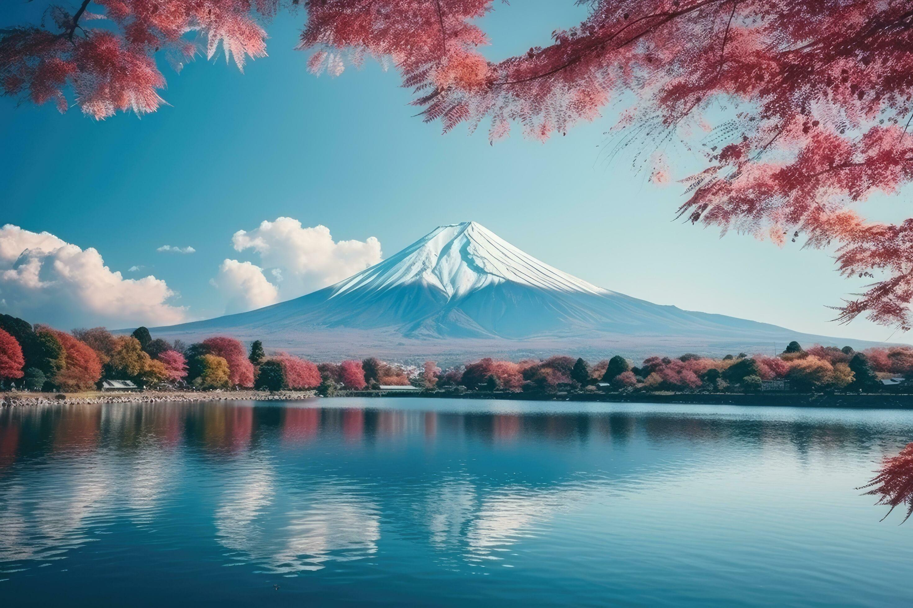
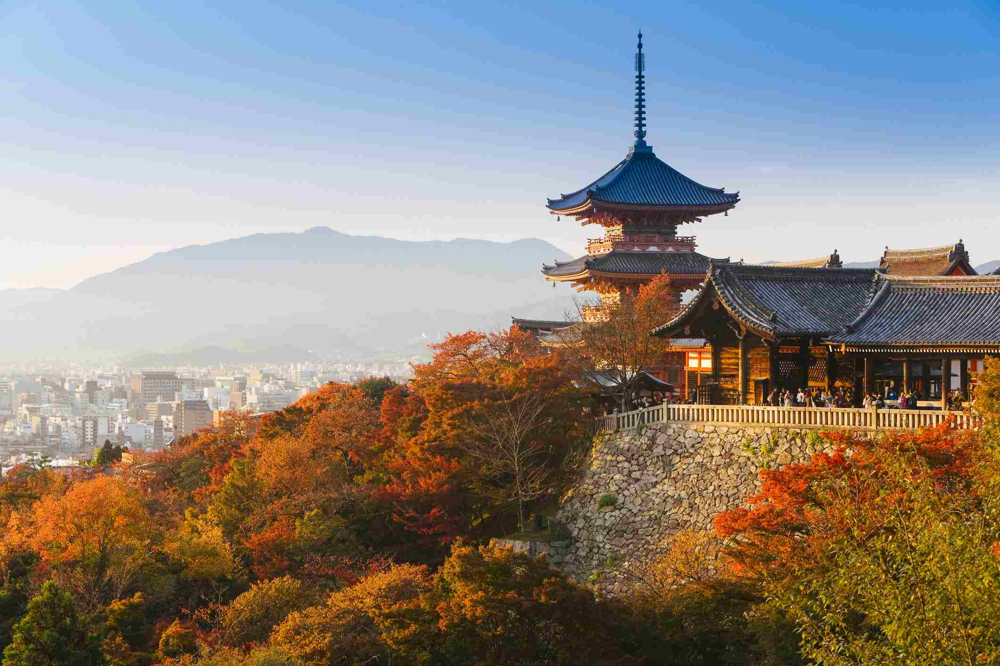

Top Attractions

Mount Fuji
Japan's highest mountain and one of the country's most iconic landmarks.

Tokyo
A modern city filled with skyscrapers, shopping, entertainment, and culture.

Kyoto
Famous for beautiful temples, shrines, bamboo forests, and traditional Japanese culture.